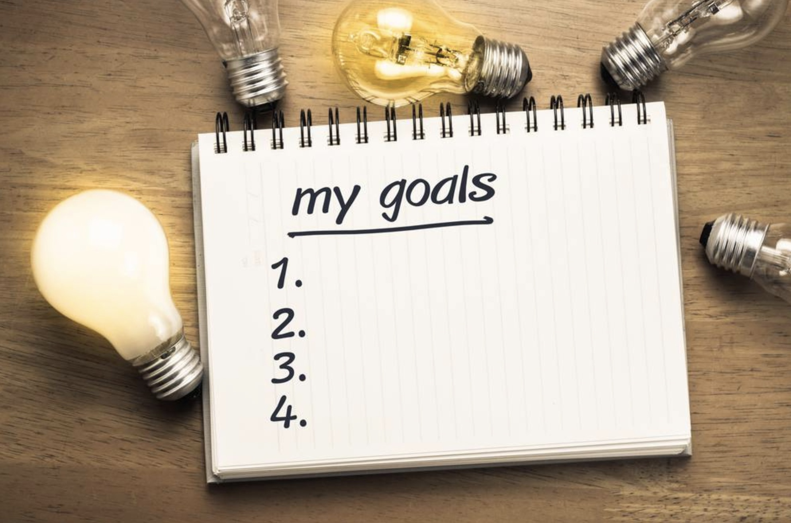

Returning To School, Finishing What You Started
Determine Your Goals For Returning To School

The first thing to consider when deciding to go back to college is what are your goals. If you have had to delay completing your college degree for any significant period of time, there is a strong possibility that your initial academic goals may have shifted a bit or even changed completely. For example, at the beginning of your college career your goal could have been to earn a degree in education because you thought you wanted to be a teacher. However, after spending the last few years working in an administrative capacity at a local school you’ve decided that dealing with kids, their parents, and teachers doesn’t quite match the image of teaching that you had come up with in your mind.
So in order to determine exactly what path you should take a good first step is to write down a list of goals associated with completing your degree. This could include things like improve your gpa, earn admittance to exclusive organizations for high achievers, receive academic scholarships, or gaining a work promotion upon graduation. Your goals will help guide you in the right direction and hopefully reduce the cost and time required to graduate.
Steps To Setting Goals
| Step 1 | Write down desired outcomes |
|---|---|
| Step 2 | Place desired outcomes in prioritized list |
| Step 3 | Remove items not related to school |
| Step 4 | Develop goals from remaining items |